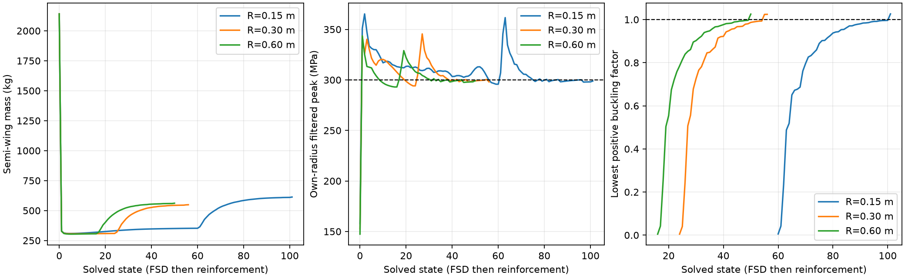
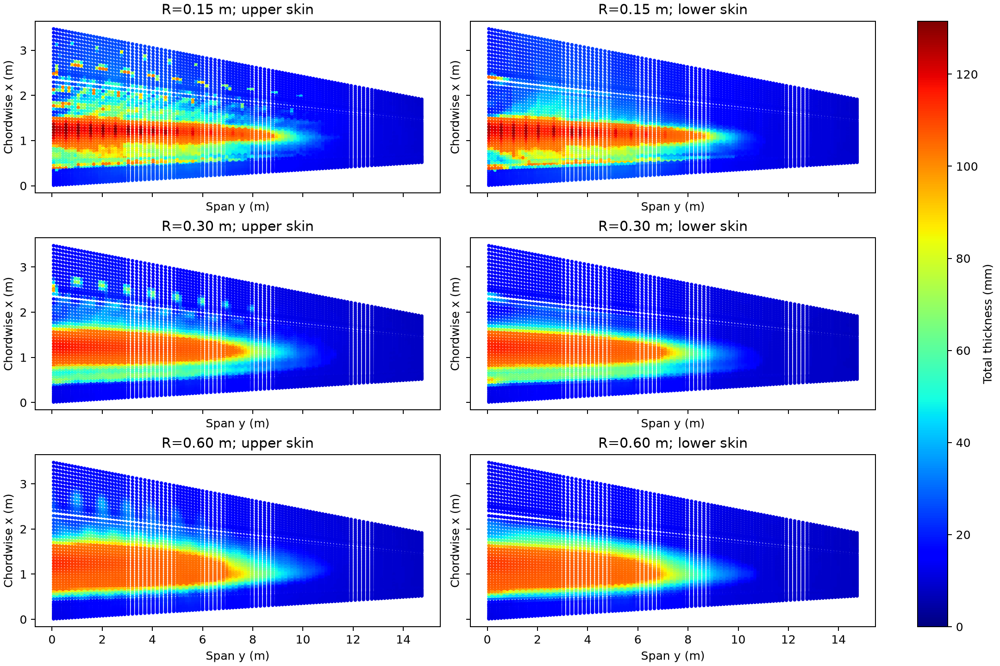
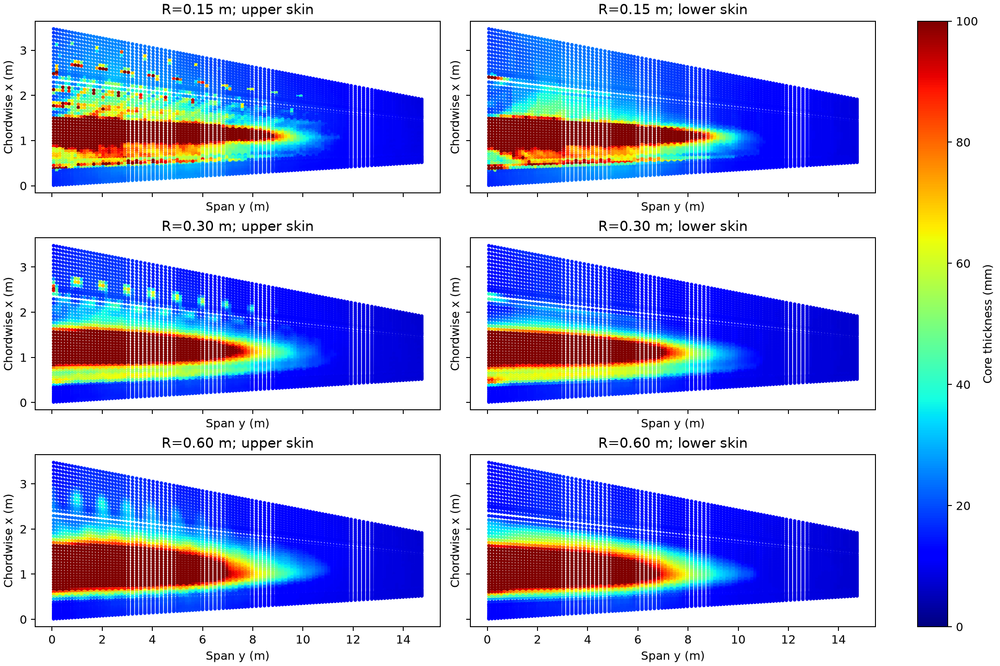
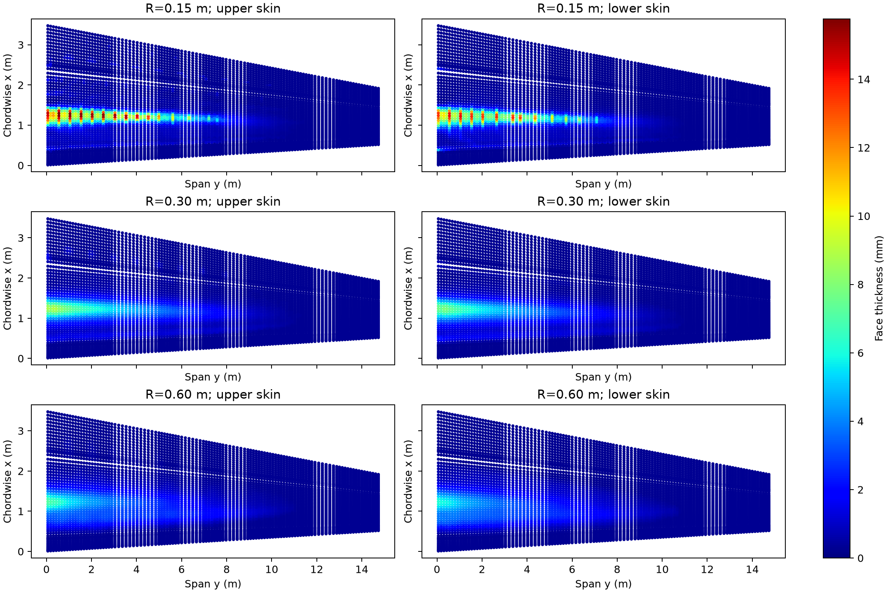
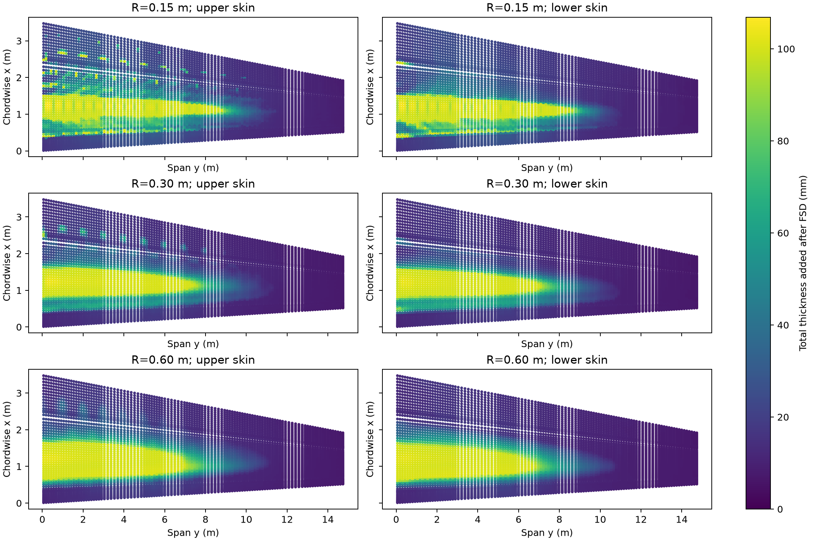
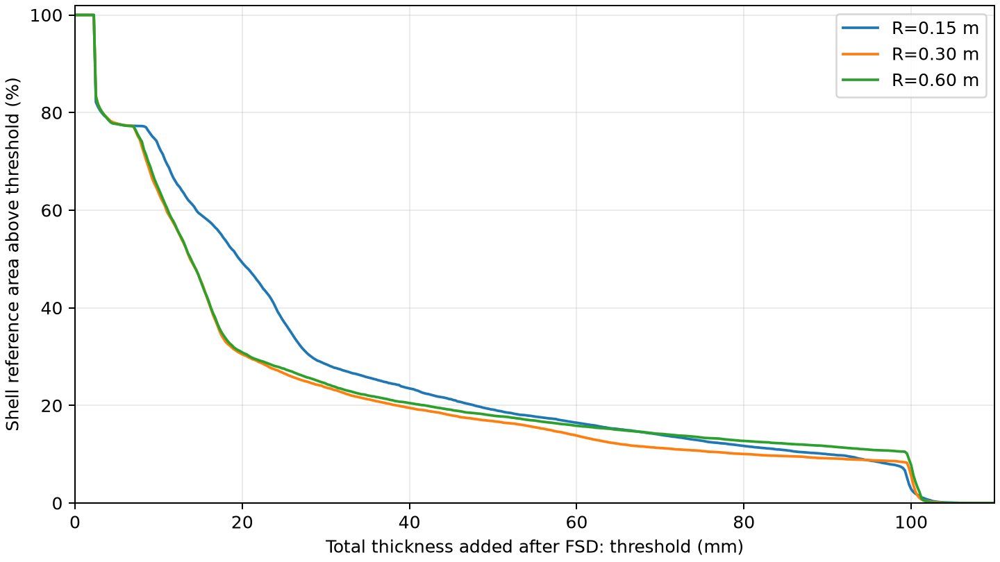

Fixed selected 16-rib layout and saved fine mesh; full FSD and buckling reinforcement; only radius changed. Radius-dependent numerical feasibility, no local-strength or ranking robustness proof.
The 0.30 m baseline is reused after input/source and saved-filter checks. The model has 16 ribs, spars at 10% and 70% chord, and 42,216 shell elements. Both alternatives start at uniform 10 mm. Full-integration SHELL181, the saved 3/3/1 layer settings, skin BOT and spar/rib MID offsets, fixed aerodynamic loads, mesh, restraints, sizing rules and stopping criteria are unchanged.
| Radius (m) | Status | FSD mass (kg) | Final mass (kg) | Mass change vs 0.30 (%) | Own-radius peak (MPa) | Raw peak (MPa) | BLF |
|---|---|---|---|---|---|---|---|
| 0.1500 | feasible | 352.1533 | 612.7909 | 11.7200 | 298.8686 | 425.8033 | 1.0262 |
| 0.3000 | feasible | 308.8416 | 548.5060 | 0.0000 | 298.0274 | 506.2783 | 1.0241 |
| 0.6000 | feasible | 305.9841 | 561.2580 | 2.3249 | 299.1686 | 574.8486 | 1.0252 |
| Radius | One face max (mm) | Core max (mm) | Total max (mm) | Added mass (kg) | Reinforced area (m2) | Reinforced area (%) |
|---|---|---|---|---|---|---|
| 0.1500 | 15.7686 | 100.0000 | 131.5373 | 260.6376 | 98.4456 | 100.0000 |
| 0.3000 | 8.9477 | 100.0000 | 117.8954 | 239.6644 | 98.4456 | 100.0000 |
| 0.6000 | 7.1515 | 100.0000 | 114.3030 | 255.2738 | 98.4456 | 100.0000 |
Sum of shell reference areas where either individual face or core increased by more than 1e-9 m from that case's own final FSD design. All physical surfaces; not projected wing area.
| Radius | FSD states | FSD stop | Reinforcement states | Solver min | Invocation min |
|---|---|---|---|---|---|
| 0.1500 | 60 | feasible_mass_stagnation | 42 | 150.6679 | 153.2798 |
| 0.3000 | 24 | feasible_mass_stagnation | 33 | 78.0363 | 79.6091 |
| 0.6000 | 16 | feasible_mass_stagnation | 35 | 79.8066 | 81.1116 |
Rows are independently sized final designs; columns are postprocessing radii. These are different scalar averaging measures, not equivalent local-strength checks.
| Design radius | R=0.15 | R=0.30 | R=0.60 |
|---|---|---|---|
| 0.15 | 298.869 | 291.615 | 289.813 |
| 0.3 | 353.220 | 298.027 | 290.456 |
| 0.6 | 420.128 | 346.857 | 299.169 |





Area-weighted RMS differences from the R=0.30 m final thickness field, across all shell surfaces (mm).
| Sizing radius (m) | Individual face | Core | Total |
|---|---|---|---|
| 0.15 | 0.801 | 10.874 | 11.206 |
| 0.3 | 0.000 | 0.000 | 0.000 |
| 0.6 | 0.378 | 7.929 | 8.416 |
All three cases reinforce 100% of the shell reference area because the procedure includes global growth steps. The curve shows how much area exceeds each added-thickness threshold; these are descriptive thresholds, not acceptance criteria.

The final mass varies non-monotonically over the tested radii: +11.72% at R=0.15 m and +2.32% at R=0.60 m relative to the reused R=0.30 m baseline. Maximum total thickness is 131.54, 117.90 and 114.30 mm, respectively. Every case reaches the 100 mm core cap. With all final fields evaluated at the common radius R=0.30 m, peaks are 291.61, 298.03 and 346.86 MPa. Own-radius feasibility therefore does not imply feasibility under a different averaging measure. This study demonstrates sensitivity of both the sizing path and final design; it does not establish radius independence or a physically optimal radius.
This study assesses sensitivity on one fixed layout and mesh. It does not test layout ranking, mesh independence, physical calibration of the averaging length, manufacturing feasibility or omitted sandwich failure modes. A failed run is not a feasible mass candidate. Previously saved results and the article remain unchanged.
The saved baseline and article files retain their original SHA-256 hashes. All geometry and loading files match across cases. The new initial raw stress fields reproduce the baseline within 4 Pa. Grow-only reinforcement and final numerical feasibility were checked. Maximum equilibrium residuals across the new runs are below 0.00036 N and 0.004 Nm.
Full numerical comparison (JSON) | Scalar comparison (CSV) | Verification record | Baseline audit
Retained new-study run files: 5.43 GiB after verified lossless archival (1338 files). Native initial/final checkpoints are retained as verified gzip archives. Compact per-state fields and first/last phase text exports remain directly available. The original baseline is reused in place.